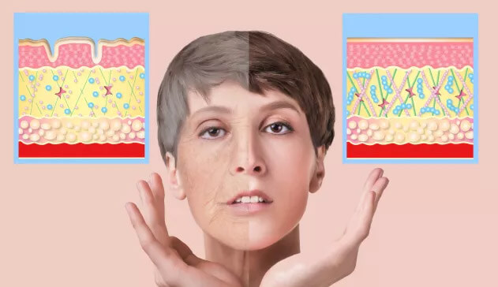

Παλιότερα υπέφερα από το σύμπλεγμα κατωτερότητας. Τώρα; Ανανεώθηκα κατά 15 χρόνια και ανέκτησα όρεξη
για δράση! Βγαίνω από το σπίτι και συναντιέμαι με ανθρώπους. Η ζωή μου έχει πάρει και πάλι χρώμα.
Κατερίνα
Καρδίτσα
ΕΙΝΑΙ ΥΠΕΡΟΧΟ. Επιτέλους έχω απαλό δέρμα και δεν χρειάζεται να εφαρμόζω στρώματα καλλυντικών για να
φαίνομαι ωραία... Νιώθω να έχω περισσότερη ενέργεια και αισιοδοξία. Το συνιστώ!
Μαγδαληνή
Βέροια
Ο ρυτιδωμένος λαιμός, οι άσχημες αυλακώσεις και το γκρι και ξηρό δέρμα, μου έπαιρναν τη χαρά της
ζωής... Αλλά αυτό είναι πλέον παρελθόν! Χάρη στο φαίνομαι νεότερη σαν
να είμαι και πάλι 30 ετών.
Μαρία
Κοζάνη
Αυτή η αγωγή με έσωσε από τα κόμπλεξ! Πλέον δεν πρόκειται να υποβληθώ σε botox, αφού δεν έχω ούτε μία
ρυτίδα. Μεγάλη ανακούφιση!
Άννα
Δράμα
Ξέρετε τι μου αρέσει περισσότερο; Το γεγονός πως το όχι μόνο
λειτουργεί, αλλά είναι και 100% φυσικό. Δεν προκαλεί καθόλου παρενέργειες και είναι απολύτως ασφαλής.
Δεν υπάρχει καλύτερος τρόπος στον κόσμο για την αναζωογόνηση του δέρματος.
Λένα
Πειραιάς
Η γειτόνισσά μου είχε δίκιο! Αυτή η φόρμουλα αντιστρέφει κυριολεκτικά το χρόνο! Τέλος στις ρυτίδες και
την ντροπή.
Χαρούλα
Λάρισα
ΔΕΡΜΑ ΑΠΑΛΟ ΣΑΝ ΜΕΤΑΞΙ ΣΕ 21
ΗΜΕΡΕΣ!
Ένα τέτοιο αποτέλεσμα της αγωγής
πέτυχε η γυναίκα μου, της οποίας το πρόσωπο είχε παραμορφωθεί από βαθιές ουλές... οπότε οι ρυτίδες και οι
ατέλειές σας θα εξαφανιστούν ακόμη πιο γρήγορα!
Χαίρετε!
Ονομάζομαι Νικος Καραΐσκος και είμαι επιστήμονας, επικεφαλής ειδικός στον τομέα της μοριακής
γενετικής ενός Ινστιτούτου Βιοτεχνολογίας στο Αθήνα. Πριν από ένα χρόνο, ανακάλυψα μια εύχρηστη και
εξαιρετικά αποτελεσματική αυρο-δερμική φόρμουλα. Χάρη σε αυτήν ήδη 312 χιλ. εθελόντριες
(συμπεριλαμβανομένης της αγαπημένης μου γυναίκας) απαλλάχτηκαν για πάντα από όλες τις ατέλειες του
δέρματος (ρυτίδες, χαλάρωση του δέρματος, σημάδια από ουλές, φλεβούλες, κηλίδες, σκιές καθώς και
σακούλες κάτω από τα μάτια και 31 ακόμη τύπους ατελειών).
Επομένως, εάν έχετε πια μπουχτίσει:
-
αδρανούς παρατήρησης πώς χρόνο με τον χρόνο έχετε ολοένα και περισσότερες ρυτίδες - και
φέρνετε στο νου σας με νοσταλγία και πικρία τις εποχές που βλέπατε στον καθρέφτη ένα νέο, απαλό και
λαμπερό πρόσωπο·
-
εφαρμογής ενός παχιού στρώματος μακιγιάζ - για να κρύψετε τις εμφανιζόμενες ρυτίδες, μαύρους
κύκλους και σακούλες κάτω από τα μάτια, καθώς και την γκρίζα ή χωμάτινη απόχρωση του δέρματος·
-
σπατάλης χρημάτων σε δεκάδες αναποτελεσματικά καλλυντικά - επειδή οι διαφημίσεις σας λένε ότι
χρειάζεστε μια διαφορετική κρέμα ημέρας, μια άλλη κρέμα για τη νύχτα, άλλη κρέμα για τις ρυτίδες, άλλη
για τα μάτια και ούτω καθεξής δίχως τέλος...
Διαβάστε οπωσδήποτε το μήνυμα που
επιθυμώ να σας μεταφέρω...
Τώρα μπορείτε να αφαιρέσετε γρήγορα, εύκολα και διακριτικά όλες τις ρυτίδες. Σκεφτείτε ότι σύντομα
κιόλας θα αποκαταστήσετε τη νεανική εμφάνιση του δέρματός σας χωρίς καν να βγείτε από το λουτρό
σας. Χωρίς να ξοδεύετε χρήματα σε αναποτελεσματικά καλλυντικά, χωρίς να χάνετε χρόνο μελετώντας τα
συστατικά, χωρίς να σας χαράζουν το πρόσωπο με το νυστέρι.
Αυτό είναι εφικτό επειδή εφηύρα μια επαναστατική αυρο-δερμική φόρμουλα, η οποία ανανεώνει το δέρμα
κατά 15, 20 ή ακόμα και κατά 25 χρόνια. Χάρη σε αυτό, εξομαλύνει όλες τις ρυτίδες απομακρύντας τις
ατέλειες του δέρματος και, ως αποτέλεσμα, αποκαθιστά στο πρόσωπο την όμορφη, νεανική, υγιή του εμφάνιση
μια για πάντα.
Όλα ξεκίνησαν από ένα τραγικό γεγονός, ως αποτέλεσμα του οποίου...
Η γυναίκα μου πέρασε ξυστά απ' του
Χάρου τα δόντια
Εκείνη την ημέρα αγόρασα στη σύζυγό μου Λιανακόκκινα τριαντάφυλλα. - Πως κι έτσι; - γέλασε έκπληκτη -
Δεν μπορώ δηλαδή πια να αγοράσω στην γυναίκα μου λουλούδια στο ξεκάρφωτο; - απάντησα και την φίλησα στο
μέτωπο. Η Λιανααξίζει όλα τα λουλούδια του κόσμου. Είναι μια γυναίκα θυσαυρός. Πάντα χαμογελαστή, ζεστή
και με κατανόηση. Η καλύτερη μητέρα για την Angela, την 5χρονη κόρη μας.
Η Λιανακαι η Angela στη διάρκεια ανέμελων στιγμών, μια μέρα πριν από το
περιστατικό που μετέτρεψε την ζωή της οικογένειάς μας σε εφιάλτη
Λίγο αργότερα τις αποχαιρέτησα γιατί έπρεπε να πάω σε μια συνάντηση. Συνόδεψα την γυναίκα μου με το
βλέμμα καθώς περπατούσε χαρούμενη στο δρόμο. Και ξαφνικά ορθώθηκαν μπροστά της δυο άντρες με κουκούλες.
Έγινε μέσα σε δευτερόλεπτα. Ένας από τους άνδρες προσπαθούσε να αρπάξει το πορτοφόλι της Λιανα. Η
γυναίκα μου προσπάθησε να αντισταθεί. Είδα την λάμψη του μαχαιριού.
Όταν έφτασα εκεί, οι άντρες είχαν εξαφανιστεί ενώ η γυναίκα μου ήταν ξαπλωμένη στο πεζοδρόμιο. Το
πρόσωπό της ήταν γεμάτο αίματα. Τριγύρω της άρχισε να μαζεύεται πλήθος κόσμου. Ο αέρας σήκωσε και πήρε
ψηλά μερικά κόκκινα ροδοπέταλα...
Η διάγνωση αυτή ήταν για εκείνη
σαν καταδίκη
- Θα το πω ευθέως - η σύζυγός σας θα ζήσει, αλλά στο πρόσωπό της θα μείνουν βαθιές ουλές - είπε στην
ψύχρα ο γιατρός μόλις βρεθήκαμε στο νοσοκομείο. Εάν το μαχαίρι του επιτιθέμενου έμπαινε ένα εκατοστό
βαθύτερα, θα μπορούσε να είναι νεκρή.
Οι αλητήριοι παραμόρφωσαν το
πρόσωπο της γυναίκας μου μέρα-μεσημέρι. Και γιατί; Για ένα ποσό το οποίο δεν φτάνει για να πάρεις ούτε
τσιγάρα.
- Μα τι σημαίνουν τα σημάδια! Το σημαντικότερο είναι ότι η Λιαναείναι ζωντανή και υγιής - σκεφτόμουν
αφελώς καθ' οδόν προς το δωμάτιό της.
Όταν μπήκα στο δωμάτιο της συζύγου μου την είδα γεμάτη δάκρυα. Η Λιαναμόλις που μιλούσε. Μετά από κάθε
λέξη που έλεγε, το πρόσωπό της αλλοιώνονταν από τον βασανιστικό πόνο.
- Τα έμαθες; Θα μοιάζω για την υπόλοιπη ζωή μου σαν χαρακτήρας από ταινία τρόμου! - ψιθύριζε τρέμοντας.
Τότε την αγκάλιασα σφιχτά λέγοντάς της λόγια ενθάρρυνσης ώστε να την καθησυχάσω.
Ωστόσο, όταν βγήκα από το δωμάτιο της γυναίκας μου, κάτι ράγισε μέσα μου. Έπεσα σαν αναίσθητος
σε μια καρέκλα του διαδρόμου και άρχισα να κλαίω σαν μικρό παιδί. Ήταν δάκρυα θυμού και ανημποριάς. Δεν
της άξιζε κάτι τέτοιο! Ενώ εγώ δεν μπορούσα να κάνω τίποτα για να την βοηθήσω...
− Είσαι ένα τέρας! – φώναζε με
δάκρυα στα μάτια
Η Λιαναεπέστρεψε στο σπίτι γεμάτη επιδέσμους. Οι πληγές επουλώνονταν επί αρκετούς μήνες και, όπως είχε
προβλέψει ο γιατρός, άφησαν ουλές. Η γυναίκα μου ήθελε να είναι θαρραλέα. Προσπάθησε να καλύπτει τις
ουλές κάτω από μακιγιάζ και χρησιμοποίησε όλα τα είδη αλοιφών και κρεμών που της έδωσα. Αλλά οι ουλές
ήταν ακόμα ορατές.
Κάποια νύχτα με ξύπνησε η κραυγή της κόρης μας. Τινάχτηκα και έτρεξα στο δωμάτιό της. Είδα μια
σπαραξικάρδια εικόνα. Η γυναίκα μου προσπαθούσε να ηρεμήσει την κορούλα μας που έκλαιγε, ενώ εκείνη
τραβιόταν μακρυά της με όλη της την δύναμη. – Άφησέ με τέρας! - Φώναζε η κορούλα. Αποδείχθηκε ότι
η κόρη μας είχε έναν εφιάλτη, αλλά όταν φώναξε τη μητέρα της, φοβήθηκε ακόμη περισσότερο. Το σημαδεμένο
πρόσωπο της γυναίκας μου έκανε το κοριτσάκι μας υστερικό.
Από τότε, η σύζυγός μου κλείστηκε εντελώς στον εαυτό της. Αποθαρρυμένη, σταμάτησε να φροντίζει τον
εαυτό της, κάλυψε όλους τους καθρέφτες του σπιτιού, ώστε να μην χρειάζεται να βλέπει την εικόνα της.
Μερικές φορές όταν γύριζα σπίτι, καθόταν στον καναπέ και κοιτούσε τον τοίχο με μια κενή έκφραση στο
πρόσωπό της. Παρακολουθούσα με πόνο την αγαπημένη μου γυναίκα να πέφτει σε μαύρη απόγνωση.
Η κόρη μας φοβόταν τις ουλές στο πρόσωπο της μητέρας της
Πώς ανακάλυψα τον «ενεργοποιητή
νεότητας του δέρματος»;
Είχα μπουχτίσει με την απραξία. Έπρεπε να απαλλάξω τη γυναίκα μου από τις ουλές της και έτσι να
αποκαταστήσω την γαλήνη στην οικογένειά μου. Είμαι επιστήμονας, ειδικός στην γενετική έρευνα.
Συμμετείχα στην εφεύρεση ουσιών, οι οποίες έφεραν έσοδα εκατομμυρίων σε κορυφαίες ιαπωνικές εταιρείες
καλλυντικών. Αποφάσισα να χρησιμοποιήσω όλες μου τις γνώσεις και την πολυετή μου εμπειρία ώστε να
δημιουργήσω μια φόρμουλα που θα αποκαταστήσει το όμορφο, υγιές δέρμα της γυναίκας μου, ελεύθερο από
σημάδια.
Ξεκίνησα άμεσα τις έρευνες. Το Ινστιτούτο Βιοτεχνολογίας όπου εργάζομαι έχει ένα από τα πιο σύγχρονα
εργαστήρια στον κόσμο. Δοκιμάζουμε καλλυντικά των μεγαλυτέρων μαρκών του κόσμου, πριν τα κυκλοφορήσουμε
στην αγορά.
Επί 6 μήνες δοκίμαζα συνδυασμούς των ισχυροτέρων φυσικών ουσιών. Στόχος μου ήταν η δημιουργία μιας
φόρμουλας η οποία θα ενεργοποιήσει την αυτόματη αναγέννηση του δέρματος. Με άλλα λόγια: ήθελα η
φόρμουλά μου να ανανεώσει το δέρμα του προσώπου της γυναίκας μου και να αποκαταστήσει την παλιά του
ομορφιά. Έπρεπε ταυτόχρονα να είναι 100% ασφαλής για την υγεία. Το δέρμα της Λιαναούτως ή άλλως ήταν ήδη
σε άθλια κατάσταση και δεν μπορούσα να την εκθέσω σε οποιονδήποτε άλλο ερεθισμό.
Δούλευα κυρίως τη νύχτα γιατί κατά τη διάρκεια της ημέρας έπρεπε να εκπληρώνω τα επαγγελματικά μου
καθήκοντα. Μετά από μισό χρόνο τέτοιας ζωής, είχα γίνει σκιά ανθρώπου. Φοβόμουν ότι δεν θα μου
φτάσουν οι δυνάμεις - ότι μετά από τόσες πολλές άϋπνες νύχτες, συνεχές στρες και προσπάθεια, ο
οργανισμός μου τελικά δεν θα αντέξει.
Είχα ολοένα συχνότερα ζαλάδες, λαχάνιαζα, ένιωθα τσιμπήματα στο στήθος. Ένα βράδυ, 6 μήνες μετά την
έναρξη των ερευνών μου, κατέληξα στα επείγοντα περιστατικά. Αποδείχθηκε ότι ήμουν σε μια κατάσταση προ
του εμφράγματος. Δεν είπα ποτέ για αυτό στην σύζυγό μου.
Ωστόσο, ένιωσα ότι βρίσκομαι κοντά στην επιτυχία και πως δεν πρέπει να τα παρατήσω τώρα.
Η βέρα αποδείχθηκε σωτήρια
Με βοήθησε ένα τυχαίο γεγονός. Μετά από πάμπολλες ώρες εργασίας στο εργαστήριο, τα δάχτυλά μου
πρήστηκαν αφόρητα. Ήθελα να βγάλω την βέρα μου γιατί άρχισε να με πονάει. Πάλεψα για λίγο μαζί της...
και κατά λάθος έριξα από το ράφι κάποιο φάρμακο που χρησιμοποιούσα στις έρευνες εκείνη τη στιγμή. Έπεσε
απευθείας μέσα στην ουσία που ήταν να σώσει την Λιαναστο μέλλον!
Βλαστήμησα εκνευρισμένος και έλεγξα αμέσως τι ήταν. Σκουαλένιο. Ως επιστήμονας, ήξερα ότι εκείνο
αποτελεί μέρος της λιπιδικής στρώσης του ανθρώπινου δέρματος και μεταβάλλει τη δράση οποιασδήποτε
ουσίας που επρόκειτο να αντιδράσει με το δέρμα επειδή είναι πολύ δραστικό. Είναι σαν να προσθέτατε
μια κουταλιά της σούπας εξωτικών μπαχαρικών σε μια σχεδόν έτοιμη μαρμελάδα. Η γεύση, φυσικά, θα άλλαζε
για πάντα. Το ίδιο έγινε και σ' αυτή την περίπτωση. Η επιρροή του δεν μπορεί να αναιρεθεί.
Νόμιζα πως όλα είχαν χαθεί. Η φόρμουλα μου ήταν σχεδόν έτοιμη - και τώρα το σκουαλένιο θα αλλάξει τον
τρόπο λειτουργίας της. Και θα πρέπει να ξεκινήσω ολόκληρη την διαδικασία από την αρχή. Ήξερα ότι δεν θα
είχα πια δυνάμεις να διεξάγω εκ νέου έρευνες για τους επόμενους έξι μήνες.
Αλλά εκείνη τη στιγμή συνέβη ένα θαύμα! Η συσκευή άρχισε να τρελαίνεται. Κοίταξα στο
μικροσκόπιο. Η φόρμουλα άρχισε τελικά να λειτουργεί όπως πρέπει! Το σκουαλένιο λειτούργησε ως
ενεργοποιητής. Τα ορατά στο μικροσκόπιο δερματικά κύτταρα άρχισαν από μόνα τους και αυτόματα να παράγουν
κολλαγόνο. Είναι μια ουσία που ονομάζεται «πρωτεΐνη της νεότητας» και είναι υπεύθυνη, μεταξύ άλλων, για
τη νεανική εμφάνιση του δέρματος.
Τα ορατά στο μικροσκόπιο κύτταρα
κυριολεκτικά «γινόντουσαν νεώτερα μπροστά στα μάτια μου».
Ήξερα πια τι σημαίνει αυτό. Έκανα λεπτομερή καταμέτρηση των αναλογιών. Χάρη σε αυτό πέτυχα
αποτελέσματα, τα οποία ούτε καν ονειρευόμουν. Αποδείχθηκε ότι η φόρμουλα όχι μόνο απαλλάσει το
δέρμα από ουλές, σημάδια και φλύκταινες. Λόγω του γεγονότος ότι διεγείρει την αυτόματη παραγωγή
κολλαγόνου, αντιστρέφει επίσης όλα τα σημάδια γήρανσης. Συνειδητοποίησα ότι στην προσπάθεια να
βοηθήσω τη γυναίκα μου να απαλλαγεί από τις ουλές της, δημιούργησα κατά λάθος έναν «ορό της νεότητας».
- Μου έδωσες ένα
νέο πρόσωπο - είπε με δάκρυα στα μάτια της
Η γυναίκα μου με εμπιστεύονταν τυφλά και συμφώνησε να δοκιμάσει την φόρμουλα που δημιούργησα,
κυριολεκτικά «επάνω της». Καθώς της έδινα το φιαλίδιο με την φόρμουλα, με ευχαρίστησε με ένα χαμόγελο.
Ωστόσο, μπορούσα να δω στα μάτια της την κόπωση και την δυσπιστία. Είχε δοκιμάσει ήδη τόσες πολλές
αναποτελεσματικές ουσίες που και τώρα περίμενε απλά την απογοήτευση. Αλλά εγώ όμως ήξερα πως αυτή
την φορά θα ήταν διαφορετικά!
Μετά από μερικές ημέρες είδα ένα χαμόγελο στο πρόσωπό της - το πρώτο εδώ και αρκετούς μήνες. - Νικος,
κοίτα, οι ουλές γίνονται μικρότερες - είπε τρισευτυχισμένη. Μετά από μια εβδομάδα, τα μέχρι πρόσφατα
τρομερά σημάδια έμοιαζαν με λεπτές λευκές γραμμούλες.
Την 14η ημέρα έγινε η υπέρβαση. Οι ουλές έχουν σχεδόν εξαφανιστεί ενώ όλες οι ατέλειες (λεπτές γραμμές
γύρω από τα μάτια, παλιές ουλές ακμής, σπασμένες φλέβες) έχουν απορροφηθεί πλήρως. Μετά από 21
ημέρες, δεν υπήρχε ίχνος σημαδιών στο πρόσωπο της γυναίκας μου. Το πρόσωπό της ήταν άψογο -
έμοιαζε με το πρόσωπο ενός αθώου παιδιού. Η γυναίκα μου ακτινοβολούσε.
Άρχισε να βγαίνει από το σπίτι και ανανέωσε τις επαφές με τους φίλους της. Έπαψε εντελώς να βάφεται.
Δεν χρειαζόταν να βελτιώνει την εμφάνισή της - το δέρμα της ήταν τέλειο και δεν χρειαζόταν βελτιωτικά.
- Μαμάκα, έχεις ένα πρόσωπο αγγελικό - είπε ένα βράδυ η κόρη μας, χαϊδεύοντας το πρόσωπο της
Λιαναμε το μικρό της χεράκι. Η γυναίκα μου τότε με κοίταξε με μια έκφραση ευγνωμοσύνης, την οποία δεν θα
μπορούσαν να εκφράσουν τα λόγια. Ένιωσα ότι εκπλήρωσα το καθήκον μου.
Οι τρεις μας και πάλι ευτυχισμένοι
Ωστόσο, ένα βράδυ, έναν μήνα μετά την εφαρμογή της φόρμουλας, η γυναίκα μου με πλησίασε με μια σοβαρή
έκφραση στο πρόσωπό της:
- Συναντήθηκα σήμερα με τη μαμά μου. Έχει γεράσει τρομερά τα τελευταία χρόνια. Και η επίθεση εναντίον
μου της πρόσθεσε άλλα 10 χρόνια... Είναι τρομερά απαισιόδοξη, λέει ότι «μοιάζει σαν παλιό, ζαρωμένο
μήλο».
- Ξέρω ότι εφηύρες αυτή την φόρμουλα μόνο για μένα. Σκέψου όμως - θα μπορούσες να βοηθήσεις τη μητέρα
μου και εκατοντάδες άλλες γυναίκες επίσης. Νικος, δεν μπορείς να αποκρύψεις αυτη την φόρμουλα από τον
κόσμο. Θα ήταν αμαρτία παραμέλησης!
Η Λιαναείχε δίκιο - δεν είχα κανένα δικαίωμα να κρατήσω μια τόσο πρωτοποριακή εφεύρεση για τον εαυτό
μου. Αποφάσισα να κάνω το καλύτερο δυνατόν ώστε να καταστίσω προσβάσιμη την φόρμουλά μου σε όσο το
δυνατόν περισσότερες γυναίκες. Κατεύθυνα την ανακάλυψη σε έρευνες ευρείας κλίμακας.
Τα 5 σημαντικότερα ερευνητικά εργαστήρια ολόκληρου του κόσμου (ΗΠΑ, Καναδάς, Ευρώπη, Κίνα και Ιαπωνία)
επιβεβαίωσαν την υψηλότατη αποτελεσματικότητα της φόρμουλάς μου. Την κατοχύρωσα με δίπλωμα
ευρεσιτεχνίας υπό την ονομασία: αυρο-δερμική φόρμουλα .
Το εξαλείφει το 98,9% των ρυτίδων και αντιστρέφει την βιολογική ηλικία του
δέρματος κατά 15, 20 ή ακόμη και κατά 25 χρόνια
Ήθελα η εφεύρεσή μου να είναι εύκολη στη χρήση, ώστε να μπορούν να την χρησιμοποιούν όσο το δυνατόν
περισσότερες γυναίκες. Γι' αυτό της έδωσα τη μορφή μιας φόρμουλας ανύψωσης του δέρματος και την σύνθεση
ενός απαλού ελαίου. Αρκεί να εφαρμόζετε την φόρμουλα στο πρόσωπό σας κάθε πρωί και βράδυ και να
παρακολουθήστε τις ρυτίδες και κάθε σας ατέλεια να εξαφανίζονται μέρα με τη μέρα.
Μόλις 2 λεπτά μετά την εφαρμογή της ανυψωτικής αυρο-δερμικής φόρμουλας , θα ξεκλειδωθεί η φυσική ικανότητα του δέρματός σας να παράγει κολλαγόνο.
Ήδη μετά την πρώτη χρήση, θα παρατηρήσετε ότι το δέρμα σας είναι πιο σφιχτό ενώ οι ρυτίδες που ήταν πριν
ορατές κυριολεκτικά θα «απορροφώνται».
Οι γυναίκες που χρησιμοποιούν την αυρο-δερμική μου φόρμουλα, περιγράφουν συχνά τη δράση της με την λέξη
«μαγεία». Πράγματι, μπορεί να φαίνεται έτσι με μια πρώτη ματιά. Μπορεί να σας τύχει να βάλετε την
φόρμουλα και μετά να πάτε στην κουζίνα για να μαγειρέψετε. Όταν θα κοιταχτείτε ξανά στον καθρέφτη μετά
από μερικές ώρες, μπορεί να έχετε την εντύπωση ότι κάποιος έχει κυριολεκτικά σβήσει τις ρυτίδες από
το πρόσωπό σας.
Πολλές γυναίκες βιώνουν αυτό το συναίσθημα. Διάφορες κυρίες μου γράφουν ότι μέσα σε λίγες ώρες
ξεφορτώθηκαν ρυτίδες, τις οποίες είχαν συνηθίσει να βλέπουν επί χρόνια. Τις ρυτίδες του «καπνιστή» γύρω
από το στόμα, την «ρυτίδα του μεσόφρυου», τις μιμικές ρυτίδες. Όλες αυτές οι ατέλειες μετά την εφαρμογή
της αυρο-δερμικής μου φόρμουλας εξαφανίζονται κυριολεκτικά από ώρα σε ώρα.
Μετά από 21 ημέρες εφαρμογής της φόρμουλας , θα απαλλαγείτε από
όλες τις ρυτίδες, τα σπυράκια, τις σκιές και τις σακούλες κάτω από τα μάτια, καθώς και από τους
λεκέδες και τον αποχρωματισμό, καθώς και από το θαμπό και ξεθωριασμένο δέρμα. Το πρόσωπό σας θα
γίνει απόλυτα απαλό, ριζικά σφριγηλό και λαμπερό, όπως το πρόσωπο μιας 20χρονης. Θα νιώσετε σαν να
γυρίσατε πίσω τον χρόνο, θα είστε ευχαριστημένη με την εμφάνιση σας και θα κοιτάζεστε περήφανα στον
καθρέφτη!
Μετά από 21
ημέρες εφαρμογής της αυρο-δερμικής φόρμουλας :
ΘΑ ΑΠΑΛΑΓΕΙΤΕ ΑΠΟ ΤΙΣ ΒΑΘΙΕΣ ΡΥΤΙΔΕΣ
ΘΑ ΑΦΑΙΡΕΣΕΤΕ ΤΙΣ ΜΙΜΙΚΕΣ ΡΥΤΙΔΕΣ
ΘΑ ΣΥΣΦΙΞΕΤΕ ΔΡΑΣΤΙΚΑ ΤΟ ΔΕΡΜΑ
ΘΑ ΑΠΟΚΤΗΣΕΤΕ ΞΑΝΑ ΛΑΜΠΕΡΗ ΕΠΙΔΕΡΜΙΔΑ
ΘΑ ΑΦΑΙΡΕΣΕΤΕ ΛΕΚΕΔΕΣ ΚΑΙ ΑΠΟΧΡΩΜΑΤΙΣΜΟΥΣ
ΘΑ ΑΠΟΜΑΚΡΥΝΕΤΕ ΤΙΣ ΣΚΙΕΣ ΚΑΙ ΤΙΣ ΣΑΚΟΥΛΕΣ ΚΑΤΩ ΑΠΟ ΤΑ ΜΑΤΙΑ

Τέτοια αποτελέσματα πέτυχε η δοκιμαστική ομάδα των 312 χιλιάδων γυναικών από όλο τον κόσμο, κάθε
ηλικίας, διαφόρων τύπων και χροιάς επιδερμίδας. Ανεξάρτητα από το αν είστε 29 ή 89 ετών, εάν το
δέρμα σας είναι ξηρό και κατεστραμμένο ή είναι λιπαρό και επιρρεπές στο έκζεμα - η αυρο-δερμική μου
φόρμουλα θα αποκαταστήσει την τέλεια απαλότητα, την σφριγηλότητα και
την λάμψη του.
Ακόμα κι αν δεν έχετε ξαναχρησιμοποιήσει ποτέ κρέμες ή μάσκες, ακόμα κι αν καπνίζετε και σας
αρέσει η ηλιοθεραπεία, ακόμα κι αν έχετε από καιρό χάσει την ελπίδα ότι θα μπορέσετε να ανακτήσετε την
προηγούμενη ομορφιά σας. Να γνωρίζετε ότι σε 21 ημέρες θα αφαιρέσετε όλες τις ρυτίδες και θα
ενθουσιάσετε τους πάντες με την άψογη, νεανική σας επιδερμίδα, απαλλαγμένη από οποιεσδήποτε ατέλειες.
Γιατί η αυρο-δερμική μου φόρμουλα
είναι τόσο αποτελεσματική;
Ως αποτέλεσμα της δράσης της αυρο-δερμικής μου φόρμουλας λαμβάνουν
χώρα στο δέρμα περίπλοκες αναγεννητικές διεργασίες. Θα δοκιμάσω να εξηγήσω τη λειτουργία της με απλά
λόγια, χωρίς να μπω σε λεπτομέρειες.
Αναρωτηθήκατε ποτέ γιατί οι νέοι άνθρωποι δεν χρειάζεται να ανησυχούν για τις ρυτίδες και γιατί το
δέρμα τους είναι πάντα σφριγηλό, απαλό και ακτινοβόλο; Για όλα αυτά ευθύνεται μια ουσία - το κολλαγόνο
Το κολλαγόνο είναι ένα είδος «ελιξηρίου της νιότης», το οποίο ο οργανισμός σας μπορεί να το
παράγει από μόνος του. Δυστυχώς με τα χρόνια το σώμα σας παράγει όλο και λιγότερο. Μετά την ηλικία των
60 ετών, η παραγωγή κολλαγόνου παύει πλήρως και το δέρμα χάνει την φυσική του απαλότητα, σφριγηλότητα
και λάμψη. Εμφανίζονται ρυτίδες, κρεμαστά μάγουλα, κηλίδες και αποχρωματισμοί.
Στην αγορά μπορείτε να βρείτε δεκάδες προϊόντα που περιέχουν κολλαγόνο, τα οποία υπόσχονται να
αποκαταστήσουν τη νεανικότητα του δέρματός σας. Ωστόσο, με το να αλείφετε το πρόσωπό σας με κρέμα
κολλαγόνου ή ακόμη και καταπίνοντας κάψουλες που περιέχουν αυτό το συστατικό, δεν αντικαθιστάτε καθόλου
την ανεπάρκειά του στο δέρμα.
Είναι σαν να προσπαθείτε να ενυδατώσετε το δέρμα σας ρίχνοντας νερό στο πρόσωπό σας. Το μόνο που
θα καταφέρνατε είναι να βλάψετε την επιδερμίδα σας. Επιπλέον, το δέρμα μετά από μια τέτοια θεραπεία
πιθανώς να γίνει ακόμη πιο ξηρό και ερεθισμένο. Παρόμοιο αποτέλεσμα έχει και το κολλαγόνο, που
περιέχεται σε διάφορες κρέμες, κάψουλες και έμπλαστρα.
Η αλήθεια είναι ότι δεν μπορεί κανείς να επαναφέρει τη νεότητα του δέρματός του, προμηθεύοντάς το με
κολλαγόνο εκ των έξω. Είναι απλώς χάσιμο χρόνου και χρημάτων. Είναι σαν να ρίχνει κανείς νερό στο
πρόσωπό του. Για να ανακτήσετε μια νεανική, απαλή και ακτινοβόλα επιδερμίδα, είναι απαραίτητη η
αποκατάσταση της φυσικής ικανότητας του δέρματος να παράγει κολλαγόνο.
Ακριβώς έτσι λειτουργεί και η αυρο-δερμική μου φόρμουλα . Χάρη
στον μοναδικό συνδυασμό δραστικών συστατικών, εμπλουτισμένων με μια τέλεια ποσότητα σκουαλένιου,
διεγείρει κάθε κύτταρο του δέρματός σας στην αυτόματη παραγωγή κολλαγόνου. Χάρη σε αυτό, το δέρμα ανακτά
για πάντα την φυσική του ικανότητα αυτοανανέωσης ενώ εσείς δεν χρειάζεται πλέον να ανησυχείτε για
ρυτίδες, χαλάρωση του δέρματος του προσώπου, του λαιμού και του ντεκολτέ, για σκασμένες φλεβίτσες η
αποχρωματισμούς.

Δέρμα ανίκανο να παράγει κολλαγόνο, καλυμμένο με ρυτίδες, χωρίς σφριγηλότητα και λάμψη
Το δέρμα παράγει μόνο του κολλαγόνο, είναι τέλεια απαλό, σφριγηλό και λαμπερό
ΕΠΙΒΕΒΑΙΩΜΕΝΗ ΑΠΟΤΕΛΕΣΜΑΤΙΚΟΤΗΤΑ
Η επαναστατική σύνθεση της φόρμουλάς μου σας επιτρέπει να αφαιρέσετε ακόμη και τις ουλές (όπως
συνέβη στην περίπτωση της γυναίκας μου), καθώς και τις βαθιές ρυτίδες και τα ελαττώματα του δέρματος, τα
οποία προηγουμένως ήταν αδύνατο να αντιμετωπιστούν χωρίς πλαστική χειρουργική επέμβαση.
Η πολυτιμότερη ωστόσο ανταμοιβή για μένα είναι τα χιλιάδες γράμματα από όλο τον κόσμο, τα οποία
λαμβάνω από γυναίκες που έχουν ήδη επωφεληθεί από την αυρο-δερμική μου φόρμουλα . Περιγράφουν σε αυτά εξαιρετικές ιστορίες από τη μεταμόρφωσή τους και
γράφουν πώς η αγωγή άλλαξε τη ζωή τους προς το καλύτερο. Επιτρέψτε μου να παραθέσω (φυσικά με τη
συγκατάθεση της συγγραφέως) την επιστολή της κυρίας Έλενας, η οποία ήταν μία εκ των εθελοντριών που
δοκίμασαν την φόρμουλα μου. Η κυρία Έλενα γράφει:
- Η αγωγή αυτή άλλαξε τη ζωή μου! Προηγουμένως έμοιαζα με γιαγιούλα. Βαθές ρυτίδες, σακούλες κάτω από
τα μάτια, τρομεροί λεκέδες σε όλο το δέρμα. Δεν ήθελα καν να βγαίνω έξω και να εμφανίζομαι έτσι στον
κόσμο. Τα παιδιά στη γειτονιά με φώναζαν «παλιομάγισσα». Και 21 ημέρες χρήσης της αγωγής του
δόκτωρα Σακούρα ήταν αρκετές για να γίνει το δέρμα μου λείο, όπως ήταν πριν 30 χρόνια. Ξάφνου,
διάφοροι κύριοι άρχισαν να μου ρίχνουν ματιές στον δρόμο. Μέχρι που κι ο σύζυγός μου άρχισε να ζηλεύει
και να με προσέχει όπως στα νιάτα του. Εάν δεν είχα χρησιμοποιήσει αυτήν την αγωγή, θα είχα κάνει το
λάθος της ζωής μου. Σ' αυτό το σημείο θα ήθελα να ευχαριστήσω από καρδιάς τον γιατρό και να του ευχηθώ
επιτυχία στην περαιτέρω δουλειά του!
Δεν ρισκάρεις τίποτα!
Η αυρο-δερμική φόρμουλα έχει ήδη βοηθήσει χιλιάδες γυναίκες να
απαλλαχτούν από τις αντιαισθητικές ρυτίδες και να αποκαταστήσουν την νιότη του δέρματός τους μια για
πάντα. Είναι μια ανακάλυψη σε παγκόσμια κλίμακα με αποδεδειγμένη αποτελεσματικότητα, η οποία έλαβε την
περίφημη εγγύηση τριπλής ικανοποίησης: πρωτοτυπίας, ποιότητας και ικανοποίησης.
Εγγύηση τριπλής ικανοποίησης
Εγγύηση πρωτοτυπίας - μπορείτε να είστε σίγουροι ότι θα λάβετε το αυθεντικό προϊόν, διαθέσιμο
μόνο μέσω αυτής της σελίδας.
Εγγύηση ποιότητας - χάρη στην προηγμένης μέθοδο παραγωγής, η αυρο-δερμική φόρμουλα πληροί τα υψηλότερα πρότυπα ποιότητας. Όλα τα συστατικά της φόρμουλας
έχουν δοκιμαστεί διεξοδικά, γεγονός που επιβεβαίωσε την κατά 100% ασφάλειά τους για την υγεία του
δέρματος σας.
Εγγύηση ικανοποίησης - πολυάριθμα καταναλωτικά και επιστημονικά τεστ επιβεβαιώνουν την υψηλότατη
αποτελεσματικότητα της αυρο-δερμικής φόρμουλας .
Προσοχή στις απομιμήσεις!
Λίγο μετά την κυκλοφορία της αυρο-δερμικής μου φόρμουλας η αγορά
κυριολεκτικά πλημμύρισε με διάφορα παρασκευάσματα, τα οποία υποτίθεται πως είναι εμπλουτισμένα με την
ιδανική αναλογία σκουαλένιου. Μην σας πιάσουν κορόιδο! Η χρήση μη-αποδεδειγμένων απομιμήσεων όχι μόνο
δεν θα σας βοηθήσει να απαλλαγείτε από τις ατέλειες του δέρματος, αλλά μπορεί επίσης να είναι
επικίνδυνη για την υγεία σας!
Η σύνθεση της φόρμουλάς μου έχει αναπτυχθεί με τη μέγιστη προσοχή. Κανένα συστατικό δεν βρέθηκε εκεί
τυχαία. Δεν φτάνει να προσθέσει κανείς μια οποιαδήποτε ποσότητα σκουαλένιου σε ένα τυχαίο μείγμα
μη-δοκιμασμένων πρώτων υλών, για να αναζωογονηθεί το δέρμα κατά 15, 20 ή 25 χρόνια. Οι αναλογίες
πρέπει να είναι απλά τέλειες. Γι' αυτό, εάν θέλετε να είστε 100% σίγουρη ότι θα απαλλαγείτε από
τις ρυτίδες σε 21 ημέρες - μην επιλέξετε απομιμήσεις.
Τώρα μπορείτε κι εσείς να
αποκτήσετε μια απαλή σαν μετάξι, σφριγηλή και ακτινοβόλα επιδερμίδα σε 21 ημέρες
Μην αφήνετε να σας πούνε ότι χρειάζεστε ένα ολόκληρο ράφι με διαφορετικές κρέμες για να απαλλαγείτε από
τις ρυτίδες. Ή χειρότερα - ότι πρέπει να πάτε να σας κόψουν με το νυστέρι. Μάθετε ότι τώρα κιόλας
μπορείτε να απαλλαγείτε από το 98,9% όλων των ρυτίδων, των ατελειών και των αποχρωματισμών, καθώς
και να αποκαταστήσετε την τέλεια απαλότητα, σφριγηλότητα και λάμψη του δέρματος.
Μεγάλες εταιρείες καλλυντικών κυριολεκτικά σκοτώνονται για να αποκτήσουν το δίπλωμα ευρεσιτεχνίας της
αυρο-δερμικής μου φόρμουλας . Μου προτάθηκαν συμβόλαια εκατομμυρίων,
αλλά δεν είναι αυτός ο λόγος για τον οποίο δημιούργησα την αυρο-δερμική φόρμουλα. Στόχος μου είναι να
απαλλάξω όσο το δυνατόν περισσότερες γυναίκες από τις άσχημες δερματικές παραμορφώσεις και ατέλειες οι
οποίες τους στερούν την αυτοπεποίθηση, απομονώνοντάς τες από τα αγαπημένα τους πρόσωπα. Θέλω κάθε
γυναίκα να είναι περήφανη για την εμφάνισή της - όπως και η γυναίκα μου τώρα.
Έχω καταβάλει κάθε δυνατή προσπάθεια για να διασφαλίσω ότι η αυρο-δερμική μου φόρμουλα θα είναι διαθέσιμη σε όλο τον κόσμο το συντομότερο δυνατό. Επιτέλεους
μπορώ με περηφάνεια να ανακοινώσω ότι τώρα κάθε γυναίκα μπορεί να την χρησιμοποιήσει και να
αποκαταστήσει την τέλεια απαλότητα στο δέρμα της σε 21 ημέρες.
Γι' αυτό σας ενθαρρύνω να εκμεταλλευτείτε αυτή την ευκαιρία! Για να λάβετε την αυρο-δερμική φόρμουλα
δεν χρειάζεται να στείλετε χρήματα μέσω διαδικτύου ή να πληρώσετε με
κάρτα. Το μόνο που πρέπει να κανείς είναι να συμπληρώσεις τη φόρμα παραγγελίας σε 2 λεπτά και μετά από
μερικές ημέρες θα λάβεις το δέμα, το οποίο θα πληρώσεις εύκολα στον ταχυμεταφορέα ή τον ταχυδρόμο.
Σας ευχαριστώ που διαβάσατε την ιστορία μου. Ελπίζω να θυμηθείτε κάποτε με ένα χαμόγελο αυτήν την ημέρα
και να σκεφτείτε «αυτή ήταν η μέρα που άλλαξε την ζωή μου».